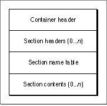

Overview
The CFM-based architecture stores information in PEF containers, which are simply storage blocks that contain PEF information. A PEF container can be stored in a file, a resource, or section of memory. The Code Fragment Manager can transparently prepare any of these forms.A PEF container has four major parts as shown in Figure 8-1.
Figure 8-1 Structure of a PEF container

The four parts are as follows:
PEF containers typically include one or more sections of executable code, one or more sections of initialized data, and a loader section.
- The container header contains information about the container itself, such as the runtime architecture that it was created for, version information, and so on.
- Each section header contains information (size, alignment, and so on) about the various sections in the PEF container. Both code and data can be stored in sections.
- The section name table contains the names of each section.
- The section contents area contains the contents of the sections described by the section headers.
Each part is described in more detail in the sections that follow.
© Apple Computer, Inc.
11 MARCH 1997